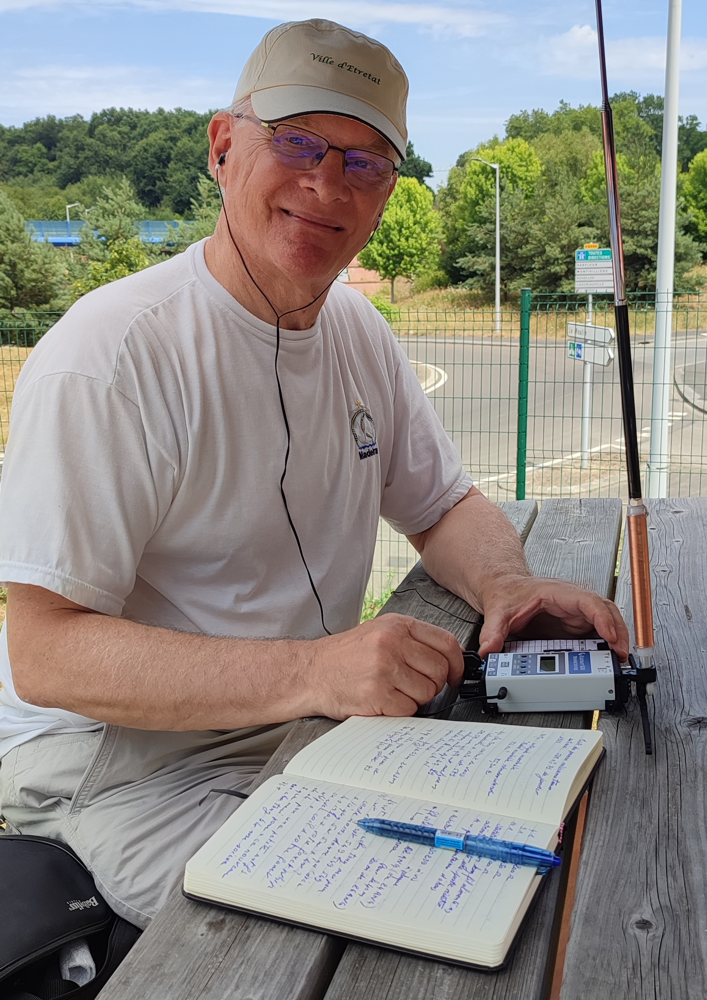

Le trafic radioamateur
Le trafic est l'aboutissement naturel de toute station radioamateur. Il met en œuvre les équipements, les antennes et les connaissances techniques dans un objectif simple : communiquer, expérimenter, observer et progresser.
Au fil des années, mes centres d'intérêt se sont orientés vers plusieurs formes de trafic : la télégraphie, le QRP, les modes numériques, le trafic portable ainsi que l'étude de la propagation. Cette rubrique rassemble des notes techniques, des retours d'expérience et des réflexions personnelles.

Les rubriques
Présentation
Une vue d'ensemble de ma pratique du trafic radioamateur, de mes centres d'intérêt et de mes objectifs.
Propagation
Comprendre les phénomènes de propagation HF, interpréter les prévisions et suivre l'activité solaire.
Télégraphie (CW)
Manipulateurs, entraînement, pratique quotidienne, matériel et ressources autour du Morse.
QRP
Le plaisir du trafic avec quelques watts seulement, en station fixe comme en portable.
Trafic portable
Stations légères, vacances, activation de sites, essais d'antennes et expérimentations sur le terrain.
Journal de trafic
Observations, essais, comptes rendus de trafic et notes prises au fil des activités.
Une rubrique en constante évolution
Le trafic radioamateur évolue sans cesse avec les conditions de propagation, les nouvelles technologies et les expérimentations personnelles. Cette rubrique sera enrichie progressivement au fil des essais, des réalisations et des activités menées à la station F6CYK.